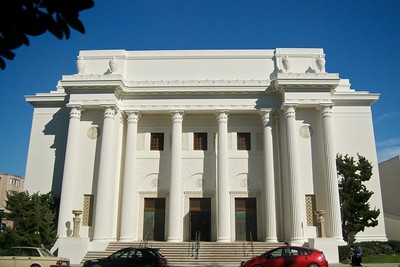

Internet Archive
«Internet Archive» — вебсервіс архівування та неприбуткова організація, розташована в Сан-Франциско, Каліфорнія. Її мета — збереження культурного надбання. Вебсервіс підтримує електронну бібліотеку, архів мережевих і мультимедійних ресурсів, програмного забезпечення, фільмів, книг і звукозаписів. Архів «Wayback Machine» містить копії сторінок вебсайтів у різні проміжки часу (за правило, що два місця). Щоб гарантувати стабільність архіву, вебдзеркало сервісу також зберігається в Новій Олександрійській бібліотеці в Єгипті. Інтернет-архів доступний безоплатно
sасоціації та офіційно визнається штатом

s Каліфорнія, як бібліотека.
History
Брюстер Кейл заснував Internet Archive у травні 1996 року, приблизно в той самий час, коли він заснував комерційну компанію Alexa Internet(ресурс зачинено в 2022 році), що займається веб-скануванням. Найдавніша відома заархівована сторінка на сайті була збережена 10 травня 1996 року о 14:42 за UTC (7:42 ранку PDT). До жовтня того ж року Інтернет-архів почав архівувати та зберігати великі обсяги Всесвітньої павутини. Архівний контент став більш доступним для широкої публіки у 2001 році за допомогою Wayback Machine.
Наприкінці 1999 року Архів розширив свої колекції за межі веб-архіву, почавши з Prelinger Archives. Зараз
Інтернет-архів містить тексти, аудіо, рухомі зображення та програмне забезпечення. У ньому розміщено низку інших
проектів: NASA Images Archive, контрактна пошукова служба Archive-It, а також вікі-редагований бібліотечний
каталог і книжковий інформаційний сайт Open Library.
Незабаром після цього Архів почав працювати над наданням
спеціалізованих послуг, пов'язаних з потребами доступу до інформації для людей з вадами зору; загальнодоступні
книги стали доступні у захищеному форматі цифрової доступної інформаційної системи (DAISY)
В серпні 2012 року Архів оголосив, що додав BitTorrent до своїх можливостей завантаження файлів для понад 1,3 мільйона існуючих і всіх нових завантажених файлів
Потім у листопаді 2016 року Кайл оголосив, що Internet Archive будує Інтернет-архів Канади, копію архіву, який базуватиметься десь у Канаді. Ця заява набула широкого розголосу через припущення, що рішення про створення резервного архіву в іншій країні пов'язане з майбутнім президентством Дональда Трампа, - цитують слова Кале:
"9 листопада в Америці ми прокинулися з новою адміністрацією, яка обіцяла радикальні зміни. Це стало чітким нагадуванням, що такі інституції, як наша, побудовані на довгострокову перспективу, повинні проектуватися з урахуванням змін. Для нас це означає збереження наших культурних матеріалів у безпеці, конфіденційності та постійному доступі. Це означає підготовку до Інтернету, який може зіткнутися з більшими обмеженнями. Це означає служити меценатам у світі, в якому урядовий нагляд нікуди не дінеться; більше того, схоже, що він посилюватиметься. Протягом всієї історії бібліотеки боролися проти жахливих порушень приватності, коли людей хапали просто за те, що вони читали. В Інтернет-архіві ми боремося за захист приватності наших читачів у цифровому світі".
Починаючи з 2017 року, OCLC та Інтернет-архів співпрацюють, щоб зробити записи оцифрованих книг архіву доступними у WorldCat. З 2018 року резиденція візуального мистецтва в Internet Archive, організована Аміром Сабером Есфахані та Ендрю МакКлінтоком, допомагає художникам працювати з більш ніж 48 петабайтами оцифрованих матеріалів архіву. Протягом річної резиденції візуальні митці створюють низку робіт, кульмінацією яких стає виставка. Мета резиденції - поєднати цифрову історію з мистецтвом і створити щось, що майбутні покоління зможуть оцінити онлайн чи офлайн.
27 травня 2024 року, Інтернет-архів зазнав низки розподілених DDoS-атак, які робили його сервіси недоступними з перервами, іноді на кілька годин поспіль, протягом кількох днів 9 жовтня 2024 року сайт знову зазнав серйозних DDoS-атак, які спричинили значні перебої в роботі та зробили його сервіси тимчасово недоступними. Команда Інтернет-архіву, включно з архівістом Джейсоном Скоттом, підтвердила факт DDoS-атаки. У випливному вікні на сайті стверджувалося, що сталося «катастрофічне» порушення безпеки. Повідомлялося, що постраждало близько 31 мільйона облікових записів користувачів.
28 вересня 2024 року стався витік бази данних з данними понад 31 мільйона користувачів. Стався витік бази данних під назвою «ia_users.sql» об'ємом 6,4 ГБ, яка включала в себе хешовані типом bcrypt паролі та електронні скриньки користувачів. Дослідник кібербезпеки Скотт Хельме підтвердив що хешований пароль у записі данних збігається з його хешованим паролем в його менеджері паролів. Він також підтвердив, що дата зміни пароля в записі збігається з датою коли він останнє змінював пароль у своєму менеджері паролів. При спробі відкрити сайт відображалось JavaScript попередження:
"Have you ever felt like the Internet Archive runs on sticks and is constantly on the verge of suffering a catastrophic security breach? It just happened. See 31 million of you on HIBP!" (HIBP - ресурс, що дозволяє перевірити чи були скомпрометовані особисті дані).
Засновник Інтернет Архіву Брюсер Кейл 10 жовтня 2024 року опублікував оновлення на X підтверджуючи витік данних, також він зазначив що сайт пошкоджили через JavaScript бібліотеку. На данний момет сайт працює, але в Wayback Machine недоступне збереження сторінки за допомогою URL.
Web archive Wayback Machine
Це вебархів, що складається з копій сторінок вебсайтів, які беруться з Alexa Internet. Цей архів дозволяє користувачам бачити версії вебсторінок у тому вигляді, у якому вони були у різні проміжки часу. Архів Wayback Machine стає доступним поступово. Проміжок часу з моменту копіювання та архівації вебсторінки до моменту, коли вона стає доступною у Wayback Machine, може становити до 6 - 12 місяців. Як альтернатива, користувачі, які хочуть заархівувати матеріал і негайно його процитувати, можуть скористатися archive-it.org. Станом на 2006 рік Wayback Machine містила майже два петабайта даних, збільшуючись на 20 терабайтів щомісяця. Станом на 3 січня 2024 року Wayback Machine містила вже ібільше ніж 99 петабайтів даних.
Multimedia resources
Як додаток до мережевих архівів, сервіс підтримує широку колекцію цифрових мультимедійних ресурсів, які або є суспільним надбанням, або розповсюджуються за Creative Commons License чи еквівалентною ліцензією, яка дозволяє вільне використання та розповсюдження. openlibrary.org (Open Library, вільна бібліотека) — сайт, що нараховує більше мільйона оцифрованих книжок, які перебувають у суспільному надбанні США.
BookServer from Google
BookServer забезпечує сумісність придбаної книги, конвертуючи її в потрібний формат. Електронний текст можна буде прочитати на будь-якому кінцевому пристрої, чи то нетбуці, смартфоні або спеціалізованій читалці на зразок Kindle.
Проєкт не обмежується книгами, які можна буде вивантажити безкоштовно. Залежно від умов ліцензії, знайдену книгу можна буде купити або взяти в оренду. В майбутньому в BookServer збираються інтегрувати платіжну систему.
Ключовий компонент проєкту — стандарт електронного каталога книг OPDS (Open Publication Distribution System), який побудований на базі розширюваної мови розмітки Atom. Основним форматом для книг є відкритий і вільний EPUB (відкритий стандарт формату електроних книг від IDPF), представлений в 2007 році.
На момент оголошення в 20 центрах сканування Internet Archive, розташованих в 5 країнах світу, йшла робота з оцифрування книг, призначених для відкритого доступу, цей каталог налічував більше 1,6 мільйонів найменувань. Але приблизно половина з них — книги, відскановані Google в рамках проєкту Book Search та завантажені згодом користувачами на сайт Internet Archive.
Попередня версія системи BookServer вже працює на сайті самої Internet Archive, а ще в проєкті з дистрибуції електронних книг Feedbooks. Видавництво O'Reilly Media, яке надавало допомогу в реалізації проєкту, планує включити в систему всі свої книги. BookServer від Google співпрацює з компанією Adobe, університетом Торонто та з проєктом «One Laptop Per Child».
Book archive WorldCat
Найбільша у світі бібліографічна база даних, що налічує понад 240 млн. записів про всі види творів 470 мовами світу (на 2011 рік). База створюється спільними зусиллями більш ніж 72 000 бібліотек з 171 країни світу в рамках організації OCLC. З серпня 2006 р. став можливий вільний доступ до пошуку у цій Базі Даних з вебсторінки worldcat.org [Архівовано 1 травня 2010 у Wayback Machine].
WebCite
Сервіс WebCite (webcitation.org) виконує архівування вебсторінок за запитом. Згодом на заархівовану сторінку можна послатися через URL. Користувачі мають можливість отримати архівну сторінку в будь-який момент і без обмежень, до того ж не важливий статус й стан оригінальної вебсторінки, з якої була зроблена архівна копія. Таке архівування особливо важливо в академічному контексті. WebCite є некомерційним консорціумом, який підтримується видавцями та редакторами, і може використовуватися будь-ким безкоштовно.